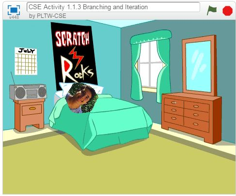

Welcome to the my Projects page
 Here is the backlog
This is the the project 1.1.3 on mypltw.
This project was made by Tristan Beuman and I. The category we were given was educational, so we decided to have fun with it.
Here is my Python Interactive English Project by my partner and I. I hope you enjoy. Here is our diagram to Python Interactive English Project. Here is my Python App. My partner and I made a Meme Typing Game I hope you enjoy. This is the Data Project my partner Nicholas and I did about Gaming. You can find the files
here.

This is the Simulation Project my partner David and I. We told to modify a simulation in Netlogo to represent the ideals a leader should have according to Machiavelli. You can find the files for the backlog and the actual simulation download here.